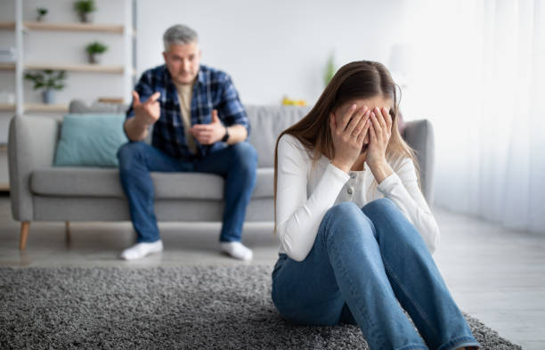
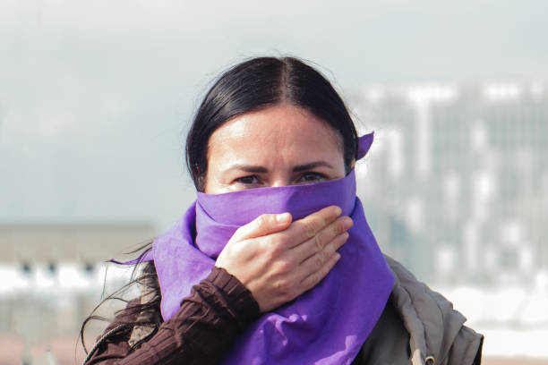

VIOLENCIA CONTRA LAS MUJERES Y NIÑAS
La violencia contra las mujeres y las niñas es una de las violaciones más generalizadas de los derechos humanos en el mundo. Se producen muchos casos cada día en todos los rincones del planeta. Este tipo de violencia tiene graves consecuencias físicas, económicas y psicológicas sobre las mujeres y las niñas, tanto a corto como a largo plazo, al impedirles participar plenamente y en pie de igualdad en la sociedad. La magnitud de este impacto, tanto en la vida de las personas y familias como de la sociedad en su conjunto, es inmensa. Las condiciones que ha creado la pandemia –confinamientos, restricciones a la movilidad, mayor aislamiento, estrés e incertidumbre económica– han provocado un incremento alarmante de la violencia contra mujeres y niñas en el ámbito privado y han expuesto todavía más a las mujeres y las niñas a otras formas de violencia, desde el matrimonio infantil hasta el acoso sexual en línea. En esta sección de preguntas frecuentes se ofrece una descripción general de los numerosos tipos de violencia (y de otros términos de uso común) que cualquier activista que trabaje en el campo de la igualdad de género debe manejar con soltura.La violencia contra las mujeres y las niñas es una de las violaciones más generalizadas de los derechos humanos en el mundo. Se producen muchos casos cada día en todos los rincones del planeta. Este tipo de violencia tiene graves consecuencias físicas, económicas y psicológicas sobre las mujeres y las niñas, tanto a corto como a largo plazo, al impedirles participar plenamente y en pie de igualdad en la sociedad. La magnitud de este impacto, tanto en la vida de las personas y familias como de la sociedad en su conjunto, es inmensa. Las condiciones que ha creado la pandemia –confinamientos, restricciones a la movilidad, mayor aislamiento, estrés e incertidumbre económica– han provocado un incremento alarmante de la violencia contra mujeres y niñas en el ámbito privado y han expuesto todavía más a las mujeres y las niñas a otras formas de violencia, desde el matrimonio infantil hasta el acoso sexual en línea. En esta sección de preguntas frecuentes se ofrece una descripción general de los numerosos tipos de violencia (y de otros términos de uso común) que cualquier activista que trabaje en el campo de la igualdad de género debe manejar con soltura.
TIPOS DE VIOLENCIA
VIOLENCIA ECONOMICA
Consiste en lograr o intentar conseguir la dependencia financiera de otra persona, manteniendo para ello un control total sobre sus recursos financieros, impidiéndole acceder a ellos y prohibiéndole trabajar o asistir a la escuela.

VIOLENCIA PSICOLOGICA
Consiste en provocar miedo a través de la intimidación; en amenazar con causar daño físico a una persona, su pareja o sus hijas o hijos, o con destruir sus mascotas y bienes; en someter a una persona a maltrato psicológico o en forzarla a aislarse de sus amistades, de su familia, de la escuela o del trabajo.
VIOLENCIA EMOCIONAL
Consiste, por ejemplo, en minar la autoestima de una persona a través de críticas constantes, en infravalorar sus capacidades, insultarla o someterla a otros tipos de abuso verbal; en dañar la relación de una pareja con sus hijas o hijos; o en no permitir a la pareja ver a su familia ni a sus amistades.

VIOLENCIA FISICA
Consiste en causar o intentar causar daño a una pareja golpeándola, propinándole patadas, quemándola, agarrándola, pellizcándola, empujándola, dándole bofetadas, tirándole del cabello, mordiéndole, denegándole atención médica u obligándola a consumir alcohol o drogas, así como empleando cualquier otro tipo de fuerza física contra ella. Puede incluir daños a la propiedad.

VIOLENCIA SEXUAL
Conlleva obligar a una pareja a participar en un acto sexual sin su consentimiento. Véase infra para obtener más información sobre la violencia sexual.

VIOLENCIA DIGITAL
La violencia en línea o digital contra las mujeres es cualquier acto de violencia cometido, asistido o agravado por el uso de la tecnología de la información y las comunicaciones (teléfonos móviles, Internet, medios sociales, videojuegos, mensajes de texto, correos electrónicos, etc.) contra una mujer por el hecho de serlo. La violencia en línea puede incluir:
CIBER ACOSO
Consiste en el envío de mensajes intimidatorios o amenazantes.
SEXTEO O SEXTING
Envío de mensajes o fotos de contenido explícito sin contar con la autorización de la persona destinataria.
DOXING
Publicación de información privada o identificativa sobre la víctima.
FEMINICIDIO
El feminicidio se refiere al asesinato intencionado de una mujer por el hecho de serlo, si bien se puede definir de un modo más amplio como cualquier asesinato de mujeres o niñas. Existen diferencias específicas entre el feminicidio y el asesinato de hombres. En la mayoría de los casos, por ejemplo, quienes cometen los feminicidios son parejas o ex parejas de la víctima, y suponen la culminación de un proceso de abusos, amenazas o intimidación constantes en el hogar, violencia sexual o situaciones en las que las mujeres se encuentran en una situación de inferioridad con respecto a su pareja en términos de poder o disponibilidad de recursos.
https://www.fundacioared.org/es/
https://portimujer.org/
https://alumbramx.org/